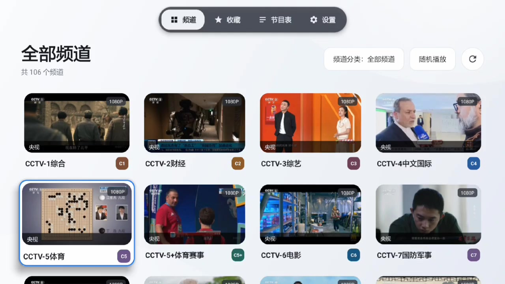
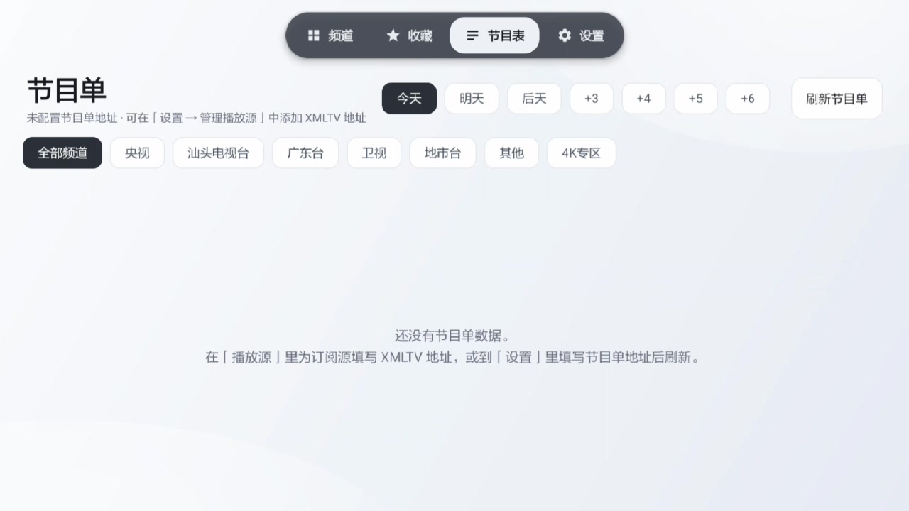
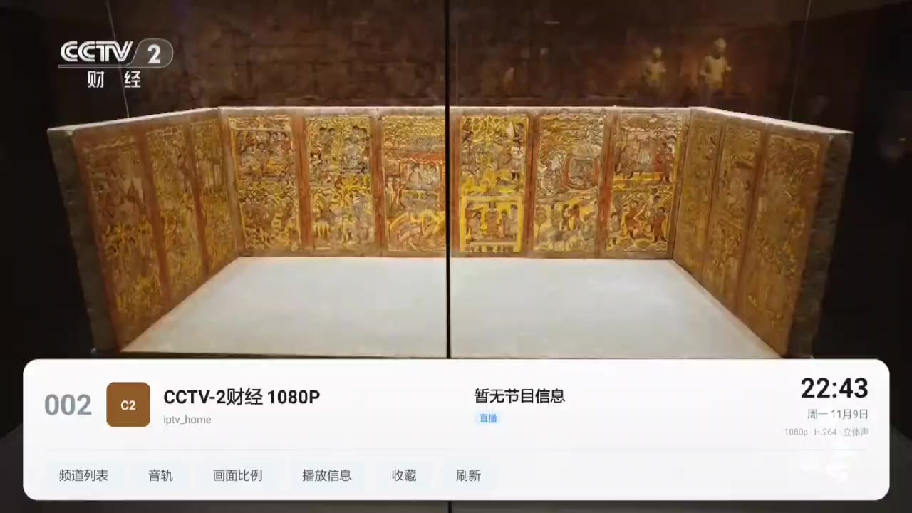
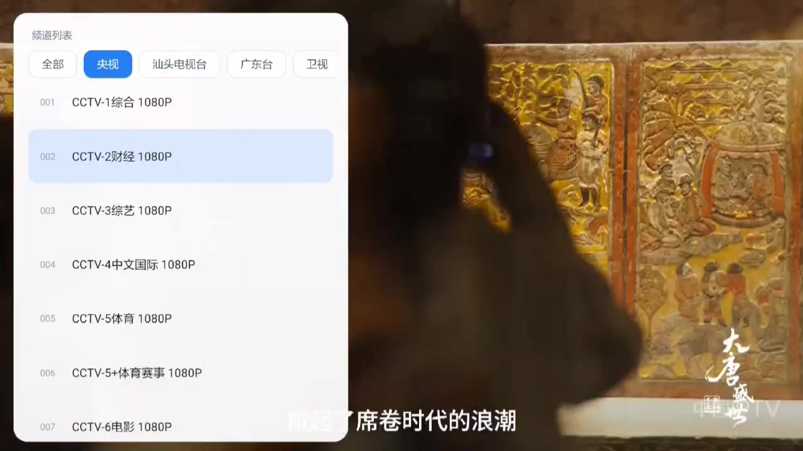

双播放器预热，换台几乎零等待
当前频道播放时，第二个播放器在后台静音预加载下一个频道。按下键的一刻直接接管，省掉建连和等首帧。
6s 后台小缓冲 · 主播放器 800ms 起播
换台的速度、光标的跟手感、遥控器够不够用——电视上的体验，基本由这三件事决定。
当前频道播放时，第二个播放器在后台静音预加载下一个频道。按下键的一刻直接接管，省掉建连和等首帧。
顶部导航光标用 240ms 缓动滑到目标位置，光标划过就切页；卡片、缩略图、标签统一 16dp 圆角，和光标同一套圆角。
方向键、确认、返回、数字键全部打通。数字键直接输台号，播放页支持「分类 → 频道」两级选台。
四张真机截图：频道总览、节目单、播放控制条、播放中呼出的频道侧栏。




播放器该有的都有，没有的也不塞。
| 添加播放源 | 内置源、订阅地址、手机扫码粘贴、上传 m3u / txt |
| 节目单 | 频道分类、时间轴、当前节目进度 |
| 播放控制 | 画面比例、音轨选择、播放信息、收藏、刷新 |
| 稳定性 | 断流自动重试；MP2 音频软件解码，避免「有画无声」 |
| 轻量 | 原生 Kotlin，无 GMS 依赖 |
几个实现上的取舍，都是为了那 1~2 秒。
主播放器 + 后台备机，命中预热直接接管，旧实例转为下一轮备机——没有创建销毁的开销。
主播放器 800ms 起播，备机 6s 小缓冲，避免后台抢带宽把正在看的流拖下水。
用 JLayer 实现 ExoPlayer 自定义音频渲染器，只接管 MPEG Layer I/II，补上老旧源的音频解码。
自绘 ViewOutlineProvider 裁切圆角，规避 GradientDrawable 下 clipToOutline 失效的问题。
内置轻量 HTTP 服务 + 二维码，手机连同一个 Wi-Fi 扫码即可上传播放列表，不用在电视上敲字。
Kotlin + Media3，不依赖 GMS，安装包控制在 10MB 以内，低配盒子也能跑。
同一套电视端交互语言，位置先留好。
频道总览 → 节目单 → 播放控制条 → 侧栏切台。点画面就开播。
不需要连电脑，把安装包送进电视就行。
下载 APK 后用 U 盘拷进电视或盒子；也可以走局域网 ADB 直接推送安装。
在「设置 → 安全」里放开对应来源，装完可以再关回去。
打开应用，手机同 Wi-Fi 扫码上传 m3u / txt，或直接粘贴订阅地址。
不内置。Bolt IPTV 只是播放器，需要你自己填播放源：内置源、订阅地址、手机同 Wi-Fi 扫码粘贴，或上传 m3u / txt 文件，四种方式任选。请只使用你拥有合法授权的内容源。
面向电视与投影，Android 大屏设备都跑得动。不依赖 GMS，国产盒子和没有谷歌服务的系统同样可以安装。
取决于源和网络。预热命中的方向键切换，通常比常规建连起播快 1~2 秒；源本身抖动大时，差距会缩小。
多半是源用了 MPEG Layer II 音频。Bolt IPTV 用 JLayer 做了软件解码来兜这种情况，仍不行的话换一个音轨或换源试试。
播放器本地运行，播放源配置保存在设备上；局域网那一步的 HTTP 服务只在同一 Wi-Fi 内临时开启。